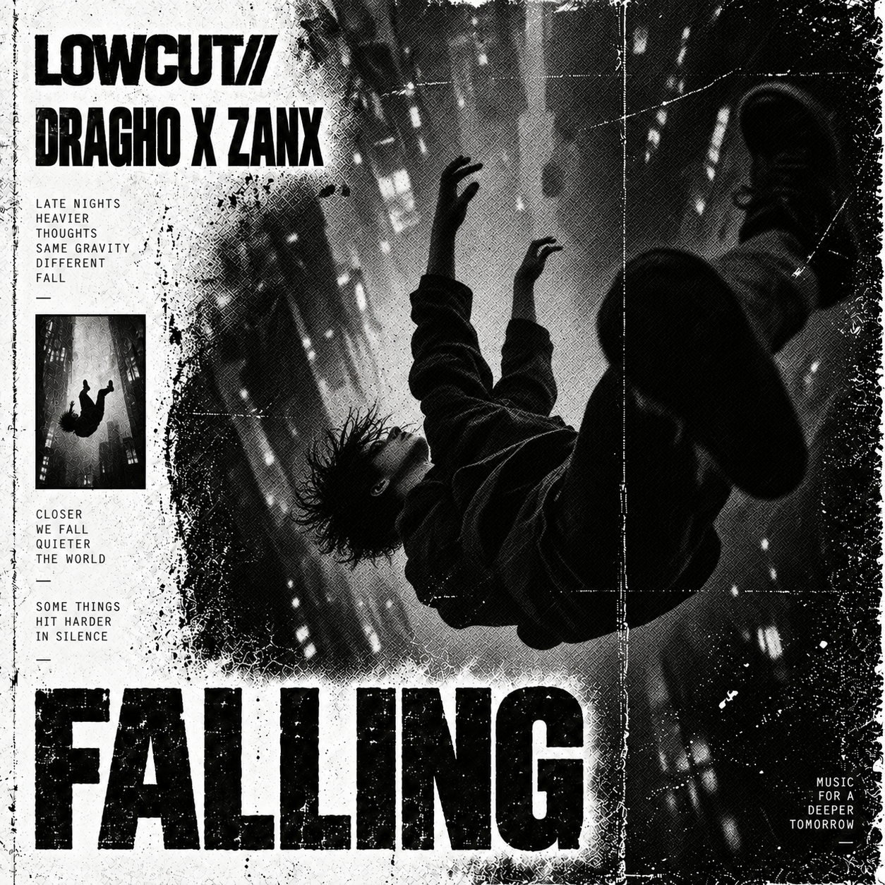
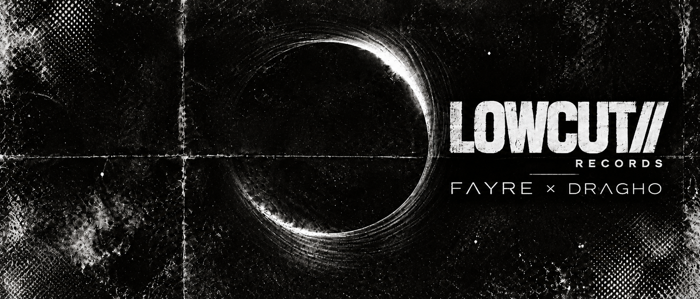
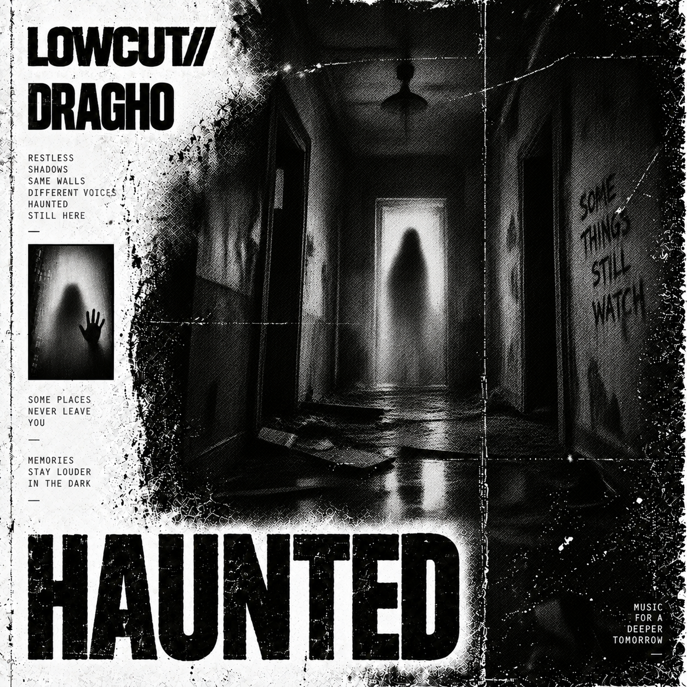
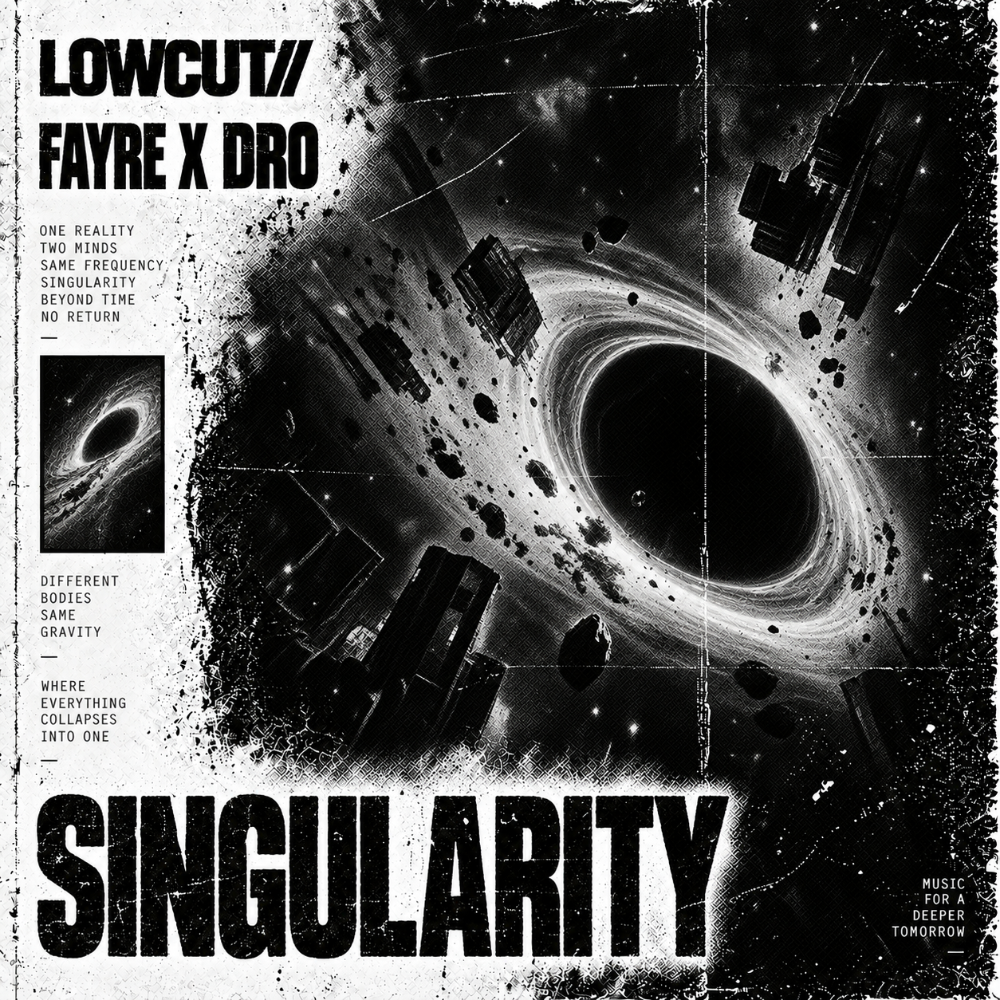
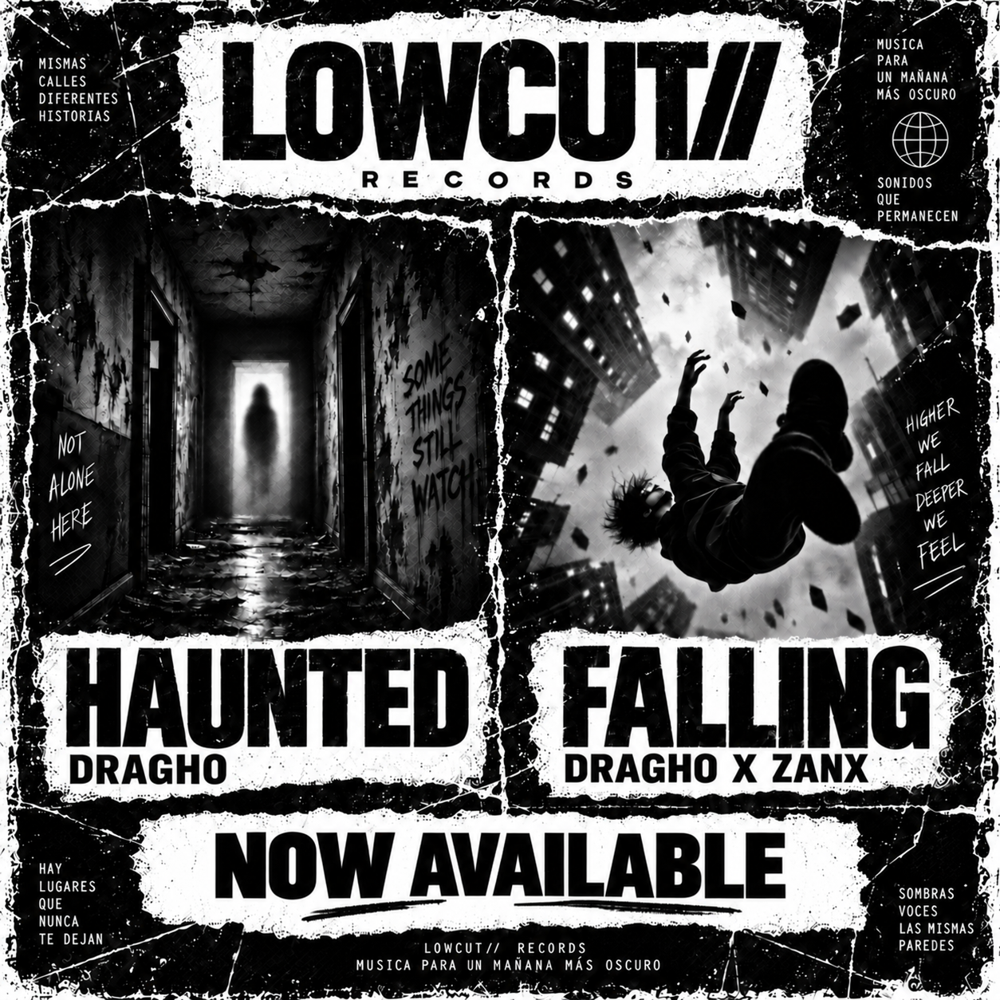
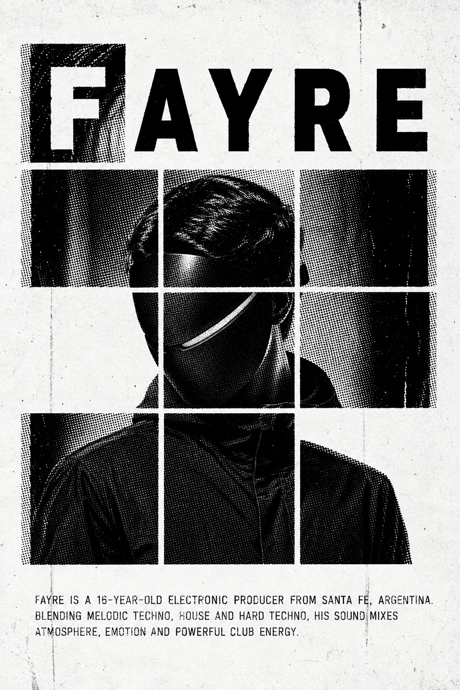
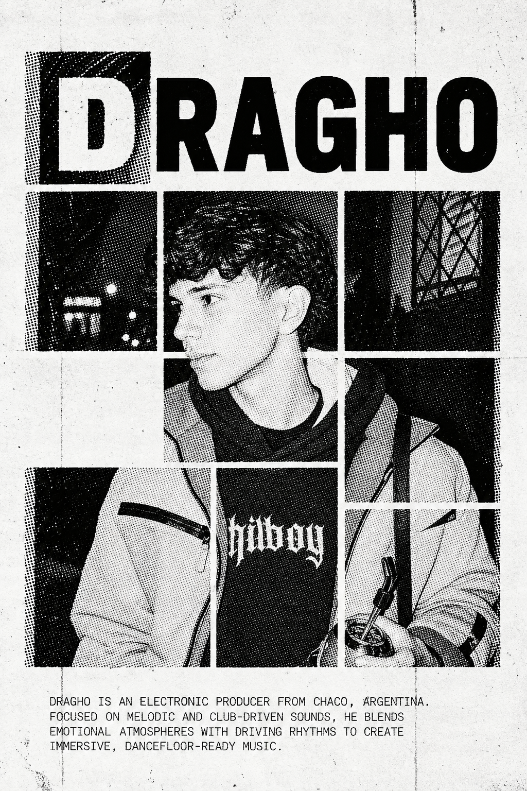
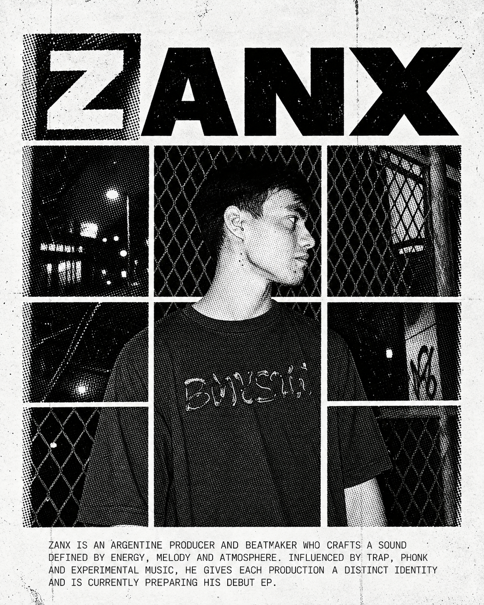
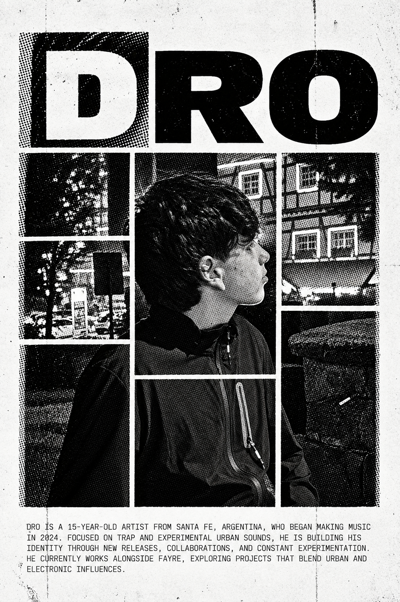
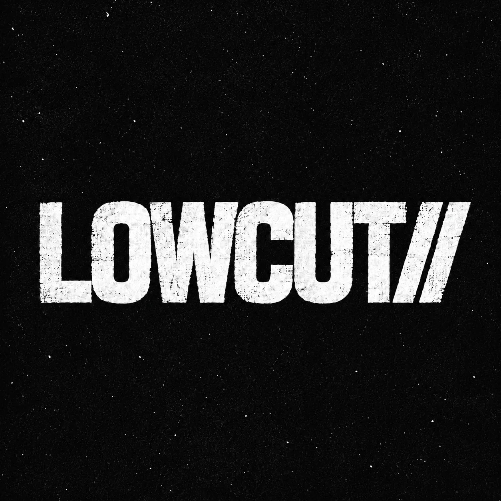

HOVER TO PREVIEW


01 / RELEASES
Raw visuals. Distinct identities. No fixed genre.




NOW / NEXT
LOWCUT// is built around artists who want room to move between scenes, genres and ideas without losing identity.
02 / ROSTER
Four emerging voices. One independent platform.

Fayre is a young Argentinian electronic music producer from Santa Fe, bringing a fresh and distinctive energy to the emerging electronic scene. At 16, his sound moves through Melodic Techno, House and Hard Techno, driven by atmosphere, emotion and powerful club rhythms.
His approach is built around experimentation, immersive melodies, solid basslines and evolving arrangements. Rather than staying inside one genre, Fayre uses every release to explore a different side of electronic music while shaping a clear artistic identity.

Dragho is an Argentine electronic music producer from Chaco focused on melodic and club-oriented sounds. He blends emotional atmospheres with driving rhythms to create music that works on the dancefloor while remaining immersive and expressive.
His productions combine melodic richness and energetic beats, giving his work a distinctive identity within modern electronic music.

Zanx is an Argentine producer and beatmaker whose sound is defined by energy, melody and atmosphere. Drawing from trap, phonk and experimental music, he gives each production a distinct identity.
He is currently preparing his debut EP as a producer, marking a new chapter in the evolution of his sound.

Dro is a 15-year-old Argentine artist from Santa Fe who began making music in 2024. His work focuses on trap and experimental urban sounds, with a constant search for a personal identity within a new generation of emerging artists.
He currently works alongside Fayre on projects that connect electronic and urban influences through collaboration and experimentation.
03 / ABOUT
INDEPENDENT BY STRUCTURE. OPEN BY DESIGN.
LOWCUT// Records is an independent Argentine label founded by Fayre and Dragho. The label was created as a space for artists who move between electronic, urban and experimental music without being forced into one scene or formula.
We care about identity before genre: strong music, a clear visual universe and artists who want to build something recognisable over time. LOWCUT// develops releases as complete projects, connecting sound, artwork, rollout and long-term artist growth.
The label works from Argentina with an international mindset, supporting collaboration between emerging producers and artists while keeping the process direct, independent and artist-focused.
Give emerging artists a serious platform where sound and identity can grow together, without forcing every release into the same genre.
Finished music with personality, a strong idea behind the project and artists willing to communicate, collaborate and build beyond a single release.
Release strategy, visual consistency, promotion and a growing catalogue designed to give each artist space while keeping the LOWCUT// identity coherent.
Founded by Fayre and Dragho, LOWCUT// combines artist perspective with label thinking: every decision is made from inside the creative process.
04 / DEMOS
We listen for identity, not a specific genre. Send your strongest finished track through a private link and give us enough context to understand your project.
Please send music that is mixed, mastered or very close to its final version.
SoundCloud private links, Drive or Dropbox are ideal. Do not attach large audio files.
Add a short bio, your city and a profile link so we can understand the artist behind the track.
Quality matters more than quantity. Start with the track that best represents your project.
Every submission is reviewed by the label. If the track fits LOWCUT//, we will contact you using the email you provide. Sending a demo does not transfer any rights or ownership.
